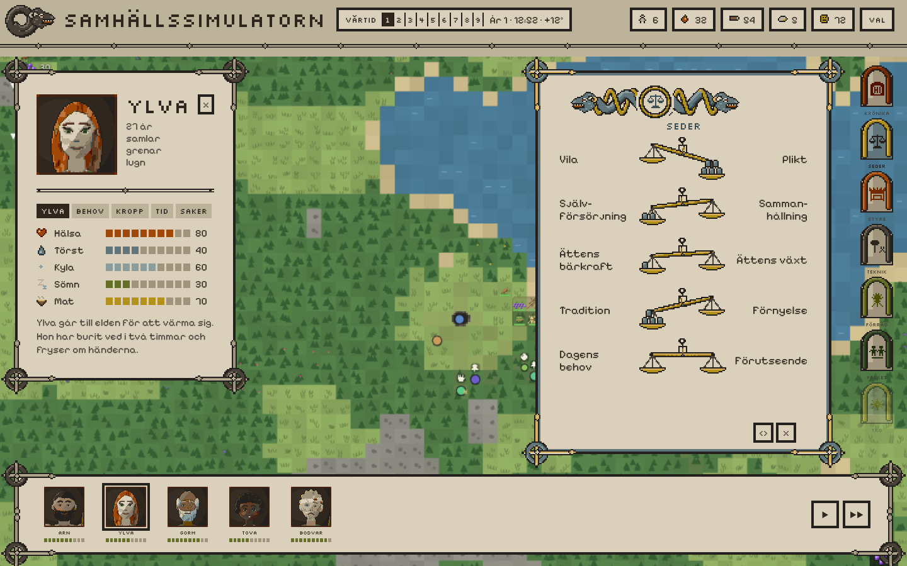
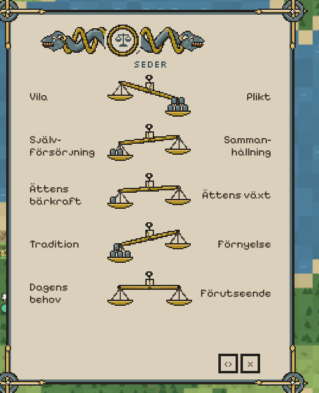
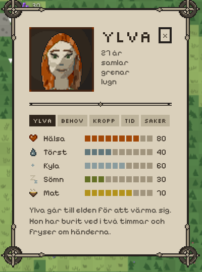
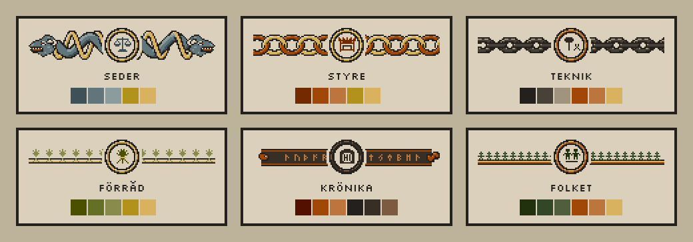
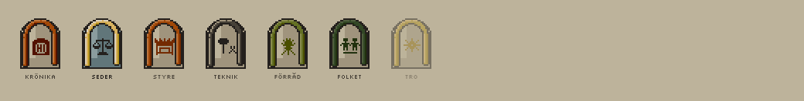
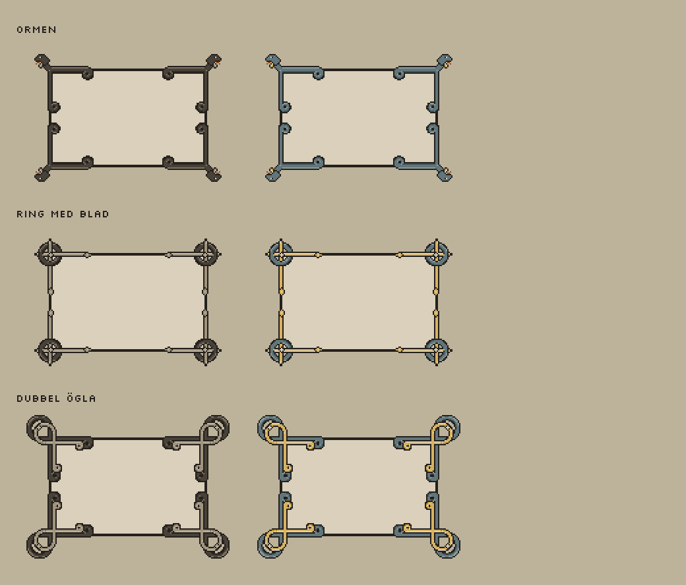

Björns beslut om panelerna, från skisserna efter v207. Grunden är neutral: ljust beige och kol, så att skärmen är lugn när alla rutor är stängda. Varje flik som öppnas har mycket personlighet: egna färger, ett band och ett emblem överst. Allt ritas i paletten, med kontur och ljus från övre vänstra hörnet. Bilderna är skisser; varje utsmyckning görs i tre versioner här på sidan när den byggs in.

Panelerna är ljust beige (ben 3) med en ram i kol. Bakom raden överst och mellan panelerna är beige (ben 2). Grunden har få färger, och de grafiska delarna i grunden är i kol och beige.
Under raden överst och under personens porträtt går en enkel dubbellinje i kol, med små romber. Inga stora flätor i grunden.
Folk, mat, ved, sten och humör i platta rutor med en pixelsymbol och ett tal. Tidsstaven med årstiden bredvid.
Varje flik har en huvudfärg och en andrafärg ur paletten, starkare än grunden. Seder: skiffer och senap. Styre: rost och senap. Teknik: kol och rost. Förråd: oliv och senap. Krönika: rost och kol. Folket: barr och rost.
Bandet och emblemet säger vad fliken handlar om. Seder: en orm med två huvuden som drar åt var sitt håll, och vågen i medaljongen. Styre: en ringkedja och högsätet. Teknik: en smidd kedja, hammare och tång. Förråd: sädesax bundna med ett snöre. Krönika: ett runband med ormhuvud och runstenen. Folket: människor som håller varandra i händerna.
Enkla bågar i flikens färger, med emblemet i mitten, i en kolumn till höger. Den öppna fliken är fylld med flikens färg. En flik som inte går att öppna än är blek.
Varje sed är en köpmansvåg mellan sina två ändar: ring, gaffel med visare, balk och runda skålar på tre trådar (mellanvarianten). Varje steg från mitten är en vikt i skålen på den sidan, högst fem, staplade tre, två och en så att de går att räkna. Vågen tippar mer ju fler vikter. Vikterna har flikens färg och vågen är i brons. Vågen är låg, och orden vid ändarna är stora nog att väga upp den.




Hörnen ska vara en del av ramen, sluta snyggt och får sticka ut utanför panelen. Tre är sparade att fundera vidare på: Ormen, Ring med blad och Dubbel ögla.
